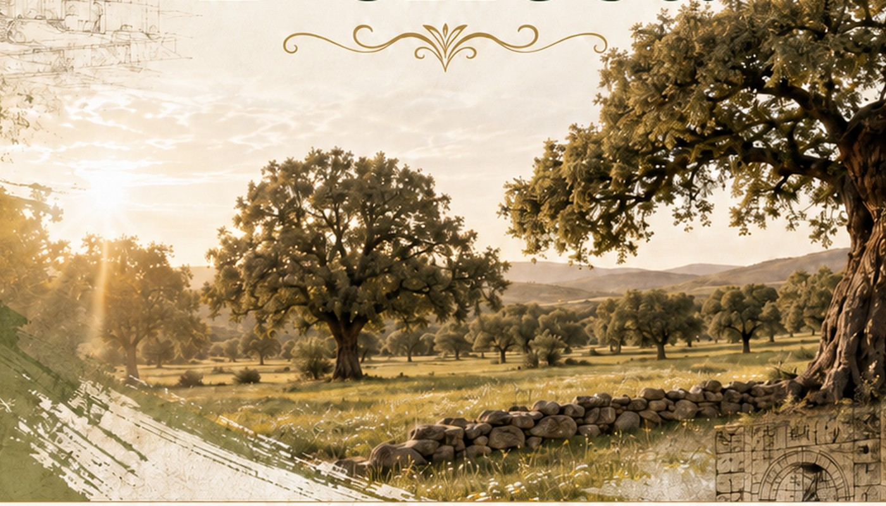

Jornadas de Arte y Patrimonio en la Dehesa
Una jornada completa para encontrarnos alrededor del patrimonio, la creación, los saberes y el territorio.

Arte, patrimonio y comunidad durante todo el día.
Las Jornadas comienzan en Sierra de Fuentes con el Taller de Toque Manual de Campanas del proyecto Saberes del Territorio y continúan por la tarde en la Ermita de Nuestra Señora del Salor, en Torrequemada, con patrimonio, conferencias, teatro, redes internacionales y experimentación sonora.
Confirma tu asistencia, especialmente a la programación de tarde en la Ermita del Salor desde las 16:30 h.
Imparte: José María Benítez Carroza · Presidente de la Asociación Cultural de Campaneros de Extremadura.
Iglesia de Ntra. Sra. de la Asunción · Sierra de Fuentes. Actividad del proyecto Saberes del Territorio. El toque manual de campanas está reconocido como Patrimonio Cultural Inmaterial de la Humanidad · UNESCO.
Comida y encuentro.
El toque manual de campanas e Hispania Nostra
Alejo Hernández Lavado · Hispania Nostra
Humanidades digitales y nuevas lecturas del patrimonio: reconstrucción virtual de la Ermita de Nuestra Señora del Salor, Torrequemada, Cáceres
Gerardo Vidal Gonçalves · Associação de História e Arqueologia de Sabrosa
Entre galerías y recuerdos: el legado minero de Santa Marta y Villalba de los Barros
Francisco Rodríguez Jiménez · Universidad de Extremadura · Global Studies, Salamanca
Păcală in the Digital Era
ADEMED (Asociación para el Desarrollo y el Medio Ambiente)
Ammaia: como uma cidade romana transformou uma paisagem
Joaquim Carvalho · Fundação Cidade de Ammaia
Las casas de escritores, patrimonio delicado de la humanidad
María Antonia García de León y Martín Gómez-Ullate
Presentación y encuentro de la Red Internacional de Pueblos de Aprendizaje (LVIN)
Concierto con plantas para una ermita
Martín León
Localizaciones
Mañana: Iglesia de Ntra. Sra. de la Asunción · Sierra de Fuentes.
Tarde desde las 16:30 h: Ermita de Ntra. Sra. del Salor · Torrequemada.
Si además quieres participar en el taller de 10:00 a 14:00, la inscripción al taller se gestiona de forma independiente.